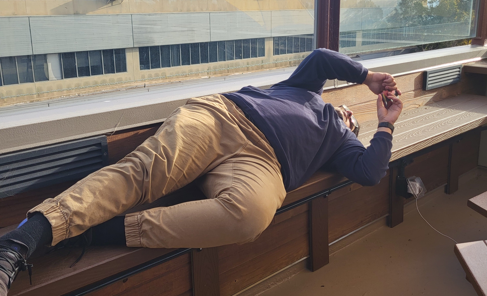
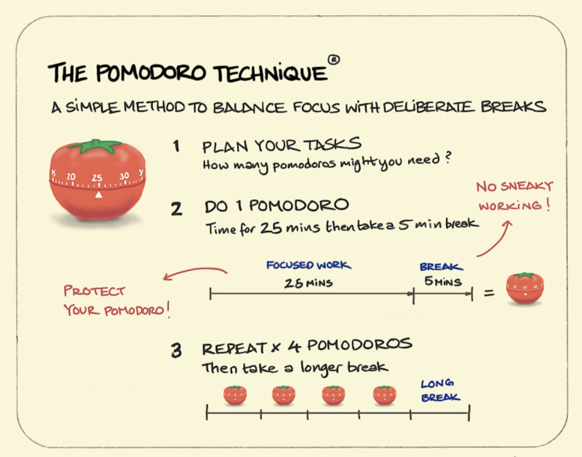
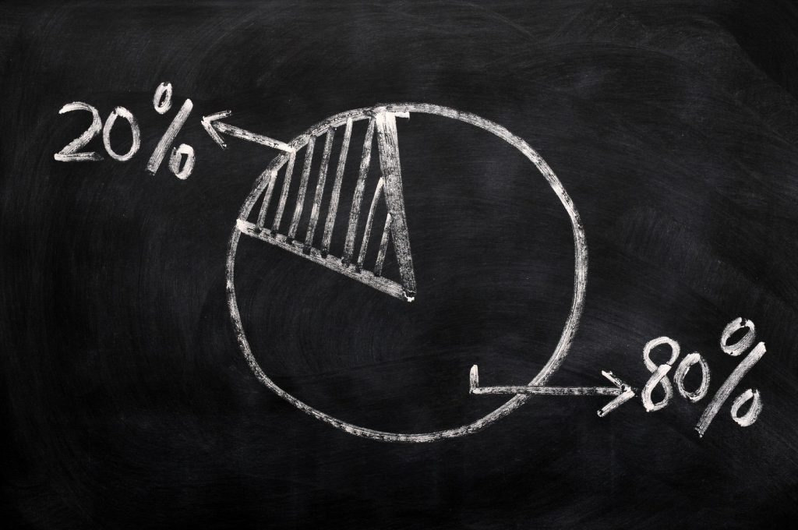
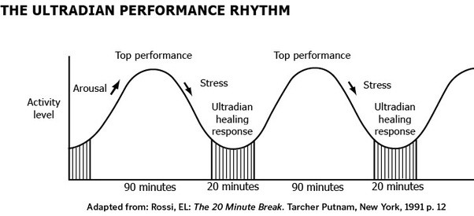

Intro

Welcome to Broductivity!
Whether you are looking for a light session to review class notes or a five hour final exam review, Broductivity can help ensure you are getting the most out of your study session, so you don't end up like our friend above.
We offer three of the best study methods, back by research:
- Pomodoro
- Recommended session length: 1 to 2.5 hours
- Intensity: Low
- Potential activities during break periods: Jumping jacks/pushups, Flappy Bird, or snack time!
- Pareto
- Recommended session length: 2.5 to 4 hours
- Intensity: Medium
- Potential activities during break periods: stretching, read an article, or browse twitter!
- 90 Minute Study Block
- Recommended session length: 4+ hours
- Intensity: High
- Potential activities during break periods: Drawing, Meditation, or play your favorite video game!
Pomodoro

The Pomodoro Method is a time management technique where work is divided into 25-minute chunks
(called Pomodoros), followed by a 5-minute break
To complete the Pomodoro Method, first create a to-do list of the tasks you need to get done. Divide the
work you need to determine how many Pomodoros you need to do. After 4 Pomodoros have been complete, take a
long break of roughly 15-30 minutes to recuperate before starting again
This technique is a good fit for those looking to manage expectations, exercise your willpower, and eliminate
burnout
Pareto Analysis

The Pareto Analysis Method is a time management technique where work is divided such that
80% of the necessary work needed to be completed may be accomplished in 20%
of the time alotted for said work.
To complete the Pareto Method, first create a to-do list of the tasks you need to get done. Divide the
work you need to determine how much of the work is 80% of the total. After 20% of the total time you have is completed, ensure
that 80% of the work has been completed.
This technique is a good fit for those looking to limit procrastination, maximize productivity and efficiency given a time limit, and complete
the most amount of work in the shortest time.
90 Minute Focus Block

The 90 Minute Focus Block is a time management technique where work is divided into 90-minute chunks
, followed by a 20-minute break
To complete the 90 Minute Block, first create a to-do list of the tasks you need to get done. Divide the
work you need to determine how many 90 minute blocks you need to do. After a 90 minute block is complete, take a 20 minute break.
This technique is a good fit for those looking to tackle larger, more focused, or more creative objectives.